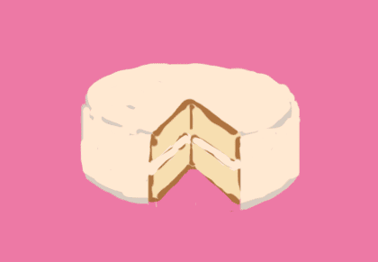
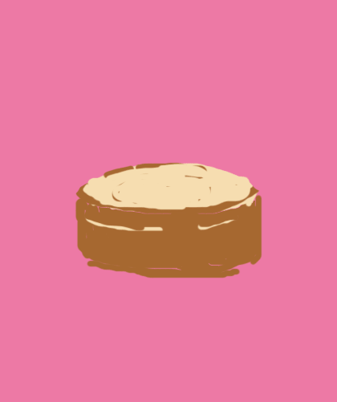
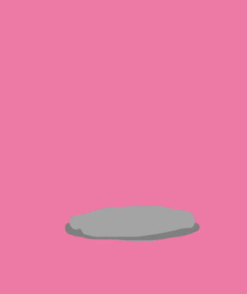
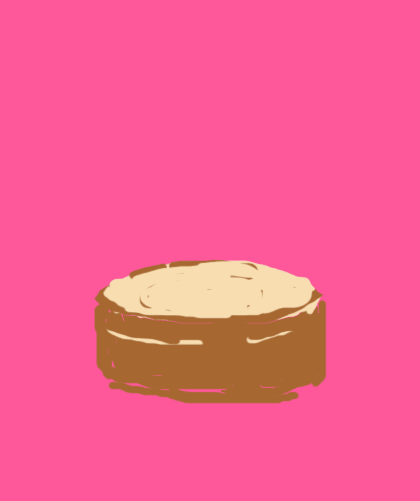
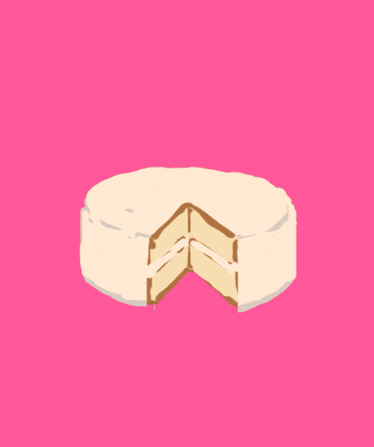
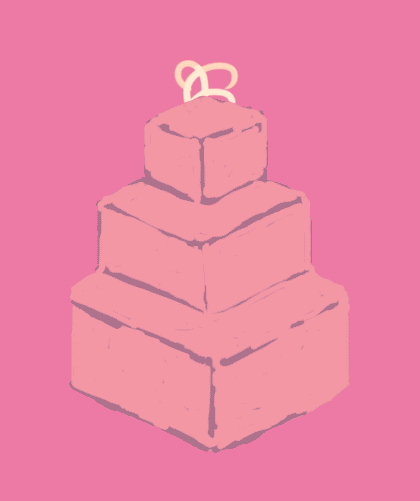

A BRIEF HISTORY OF CAKE
WHAT IS CAKE?
cake, n.
an item of soft, sweet food made from a mixture of flour, shortening, eggs, sugar, and other ingredients, baked and often decorated
WHAT ISN'T CAKE?
What makes a cake, cake?
Is cake only round? Is it soft and light? Or is it compressed? When is a cake cake and not bread? Or a biscuit? Or a muffin? Or a scone?
These are good questions to keep in mind. Identifying a cake can be more complicated than it seems. We will be tracing the history of the modern cake as defined previously.
CAKE ANCESTORS

Cake's most obvious ancestor is bread. Bread and cake were indistinguishable throughout much of history. Cake's other precursors include porridge and pancakes.
The Ancient Egyptians were the first culture to show evidence of baking skills, but the development of cake happened across cultures all around the world. The Ancient Romans added eggs and butter to bread dough and sweetened it with honey. The earliest English cakes were essentially bread, and were called tea-breads.
THE FIRST CAKES
Cake as we know it truly began to emerge in the 17th and 18th centuries.
The emergence of the cake hoop, made of metal or wood, affected the texture of cake by reducing crust formation, and importantly, made them round. The first ovens (which were essentially cupboards in chimney walls) were developed. In 18th century Britain, eggs replaced yeast as a raising agent, making the cakes fluffy. The invention of baking powder, which allowed for soft, light, spongy cakes, marked the final stage in the evolution of cake.
THE ICING ON THE CAKE
The very first icing came in the 17th century, in the form of a mixture of egg whites and rosewater that was brushed onto a cake still hot from the oven, then sprinkled with sugar and returned to the oven to dry. It had a texture that looked almost like glass.
Marzipan, an almond paste that separated the cake from the dry icing, was developed in the late 18th century. Around the same time, confectioner's sugar or icing sugar emerged, which led to the creation of modern royal icing still used today. Ganache (cream and chocolate melted together) and fondant (a creamy paste made of sugar and water) were developed in France, and buttercream was created in Germany in the late 19th century.
CAKE CULTURE
Round cakes have had symbolic and ritual significance across cultures and time periods. Generally, they reflected the cyclical nature of life. The Chinese celebrate the Mid-Autumn Festival by eating mooncake, an ancient tradition that continues today. The pagan Russians baked sun cakes called blini to honor the springtime. The Ancient Celts rolled cakes down a hill during the Beltane Festival on May 1 to celebrate the coming of summer.
Cakes are still heavily ritualized today, with the blowing of candles on birthday cakes, the associating of fruitcake and yule log with Christmas, and the cutting of the wedding cake. Cakes symbolize the importance of the person or event it is for.
CAKE VARIETIES
Innumerable varieties of cakes have emerged over the ages and around the world! The development of cake mix (first appeared in England in the 1840s, and popularized by Betty Crocker in America in the 1940s) have revolutionized home baking and made cakes easier than ever to make. Whether one uses a premade mix or not, the process of cake-baking has been made easier by centuries of innovation.
21st CENTURY CAKES
Cakes are manifesting into more forms than ever before. Cupcakes were first popularized in the 1990s by Magnolia Bakery in New York City. Numerous cupcake shops have since opened during the early 2000s. Cake pops, invented by Angie Dudley, rose to popularity between 2009 and 2011.
Cake has become an art form as well. Some cakes, called "imposter cakes," are molded and decorated to look like other foods. Claes Oldenburg's sculptural "floor cake" is an larger-than-life cake model. Cakes are even becoming multimedia art. In 2014, Disney made a wedding cake that involved interactive projection mapping!
THANKS FOR READING!
Next time you have a slice of cake, you can appreciate the centuries of human invention and culinary discovery that have allowed you to enjoy this little luxury!